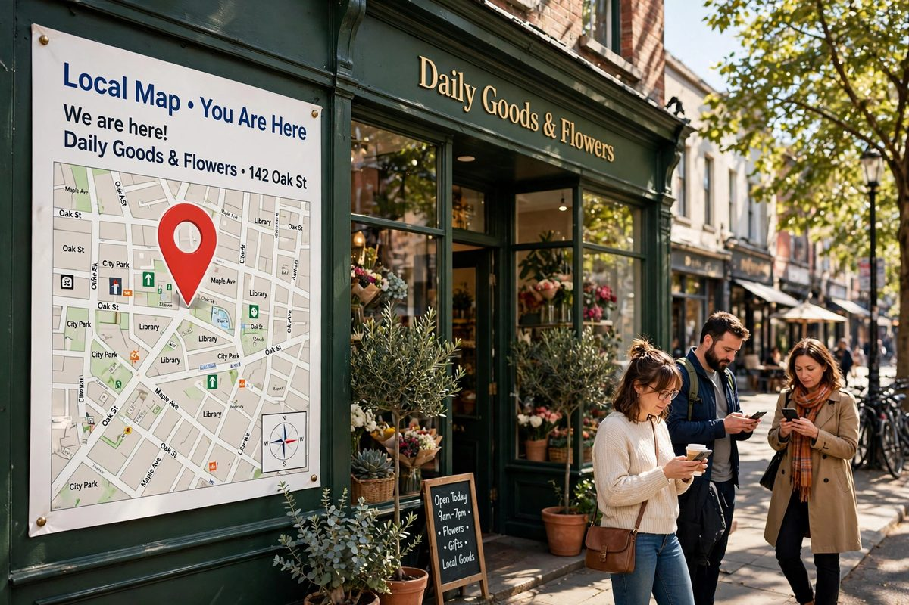

Home > Guides > Local Keywords: How to Be Found by People Nearby
Local Keywords: How to Be Found by People Nearby
A practical guide from Keyword Finder.

A bakery, a plumber, a clinic or a tutor does not need visitors from the other side of the world. It needs people nearby who are ready to visit, call or book. Local keywords add a place to a service: plumber in Lahore, best pizza near me, dentist open on Sunday. This guide explains how local search works, how to find the local phrases that matter, and how to use them on your site without stuffing place names into every sentence. It is written for small local businesses and for anyone whose audience is in one area.
How local search is different
When someone searches with a place name or with near me, the search engine shows local results: a map, business listings and pages about that area. The searcher often wants a phone number, an address, opening hours or directions, not a long article. That means a local page should answer practical questions quickly: where you are, when you are open, what you offer, and how to contact you. A local keyword is not just a topic plus a city; it is a request from someone nearby who may act today.
Find the local phrases people use
Start with your service plus your area: service in city, service near neighbourhood, best service in city. Add variations people actually use, such as open now, near me, cheap, best and 24 hours. Look at the suggestions that appear when you type your service into the search box with your city, and check the related searches. Ask customers what they searched for, because their words are often different from the words a business owner would choose. Write down the phrases for each service you offer and each area you serve, but do not invent areas you do not serve.
Use local keywords on the right pages
Give each main service a page that mentions the area naturally in the title, the first paragraph and a heading. Add the address, the areas you serve, and practical details such as parking or nearby landmarks. A separate page for each area can help if you genuinely serve several areas, but do not create near-identical pages for every suburb with only the place name changed. That looks like spam and helps nobody. One honest, useful page per service and area is better than twenty thin pages. Keep your business name, address and phone number the same everywhere they appear online.
Support local pages with real local signals
A local page works better when the rest of your online presence agrees with it. Keep your business listing up to date, ask happy customers for reviews, and mention local events or landmarks where it is natural. Add photos of your real premises and your real work. If you serve a neighbourhood, write about it in a way that shows you know it. Search engines and customers both trust a business that looks real and local, and that trust is worth more than repeating a place name many times.
Quick tips
- Add a place only where you genuinely serve it
- Answer practical questions first: hours, address, contact
- Keep business details identical everywhere
- One honest page per service and area
Frequently asked questions
What is a local keyword?
A search phrase that includes a place, such as a city or neighbourhood, or implies a nearby search, such as near me. It is used by people looking for a business or service close to them.
Should I create a page for every suburb?
Only if you genuinely serve each area and can write a useful, distinct page for it. Near-identical pages with only the place name changed are poor quality and can hurt your site.
How do reviews help local keywords?
Reviews show that real customers use your business, and they often mention the service and the area in their own words. That helps both trust and local relevance.